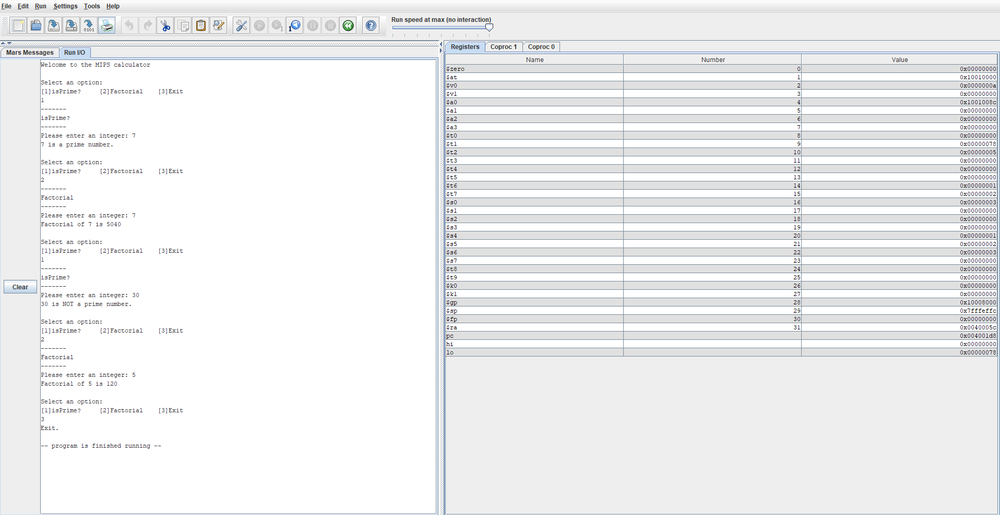

IsPrime & Factorial Calculator
MIPS 32 Assembly Language

Overview
Produced a MIPS 32 Assembly Language program that calculates the prime status of a number and the factorial of a number.
Key Features
- IsPrime Calculation
- [Item Here]
- [Item Here]
- Factorial Calculation
- [Item Here]
- [Item Here]
- Exit Option
- [Item Here]
- [Item Here]
Technical Implementation
- [Item Here]
- [Item Here]